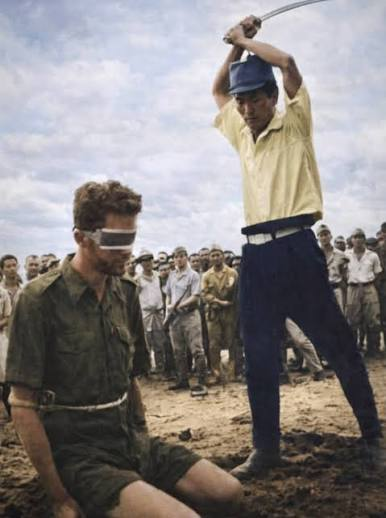

O BARCO INFERNAL
Ira Wolfert
Publicado no Brasil em SELEÇÕES DO READER'S DIGEST, edição de julho de 1945.
(Mantém grafia original da época)
Dois sobreviventes de um navio-prisão dos japoneses narram um episódio trágico da guerra do Pacífico.A HISTÓRIA do Black Hole de Calcutá ainda hoje está presente na memória dos homens; mas a guerra atual produziu, entre outros episódios, um que deixará um rasto de horror ainda maior.
São dois sobreviventes que o relatam agora: os sargentos do Corpo de Fuzileiros dos Estados Unidos, Verle Dwight Cutter, de 26 anos de idade, e Onnie Ellsworth Clem, Jr., de 25 anos.
«Qs japoneses tiraram uns 650 dos nossos homens que estavam no campo de concentração de prisioneiros de Lasan- gue, na ilha filipina de Mindanau, » disse Cutter. «Mandaram a gente formar em filas de cinco, e fizeram passar uma corda com um centímetro de grossura em volta das pernas dos homens que formavam no fim de cada fila, de ponta a ponta da coluna. Se algum desses homens estava sem calças, atavam a corda no pulso, e se o pulso estava ferido, os japoneses faziam a concessão de enrolar a corda no pescoço. »
«Na estrada tinha espaço de sobra para a coluna poder marchar à vontade e com certo conforto, mas eles puxavam a corda, nos obrigando a cerrar fileira e a marchar agarrados uns aos outros. Fizeram a gente caminhar assim bem uns quatro quilômetros, e afinal chegamos a um ponto onde estava um cargueiro japonês. Alguns estavam com os pés tão doloridos, que tinham de caminhar nas pontas dos pés. Outros estavam impaludados. Dois ou três tinham enlouquecido, e não paravam de gritar. »
«Aquela altura pode-se dizer que nenhum de nós estava o que se chama normal. Todos tínhamos sido prisioneiros dos japoneses pelo menos 29 meses. A Marcha da Morte, Cabanatua, a Colônia Penal de Davau—nós todos conhecíamos muito bem. Até que afinal nos fizeram embarcar no navio prisão, e nos enfiaram no porão. »
«Enfiaram é o termo,» interveio Clem. «Eu vim com um grupo de 100 que estavam comigo no campo de concentração do aeroporto de Matina, e eles nos encaixaram à força entre os 650 que já estavam no porão. Em qualquer lugar que a gente se encostasse ou deitasse, já tinha outro. A atmosfera estava tão abafada e fedorenta, que no fim de um dia ou pouco mais, até os mais fortes perderam a energia. Ficamos alí, num estado de torpor e sonolência. »
«Ao meu lado estava um rapaz atacado de malária,» disse Cutter. «Ele devia estar com uns 40º de febre. Hoje, eu posso me considerar bastante perito em questão de malária: desde que nós nos rendemos em Bataã, sofri quarenta e oito ataques! Para me tratar, os japoneses me deram quinina em dose muito abaixo do que era preciso.»
«Eu aí disse ao pessoal: —Olhe aquí, este ‘rapaz está muito mal. E preciso vocês arranjarem um lugarzinho pra ele se deitar. — Começamos todos a empurrar e a comprimir uns aos outros, até que se arranjou lugar pra ele.»
«Passado algum tempo nós organizamos um sistema de descanso: nos deitávamos por turnos—uma hora durante o dia e uma hora durante a noite para cada homem. Depois seguia-se um turno de ficar em pé. Depois, de joelhos, sentados nos calcanhares, ou agachados, conforme fosse mais cômodo. Assim fomos dando um jeito de descansar durante aquelas 18 noites e 19 dias.» «No começo,» disse Clem, «nós ficávamos o tempo todo pensando: —Meu Deus, quando é que isto vai acabar? Mas passado algum tempo, nem isso nós éramos capazes de pensar; estávamos simplesmente entorpecidos.»
«Eles nos davam comida duas vezes por dia,» interveio Cutter. «Mandavam a bóia ao porão, dentro de uns baldes; cada refeição constava de uma colherada “de arroz cozido, e uma chícara de sopa aguada, pra cada homem. Os japoneses em cima comiam camotes (espécie de = batata doce) e pra fazerem a nossa sopa “eles cozinhavam em água a casca dos camotes...»

«Cada homem recebia por dia só dois terços de uma chícara de água. Afinal, os japoneses fecharam por completo a escotilha do porão. De começo ainda deixavam de fora uma tábua, de cada lado da escotilha, pra entrar luz e ar. Mas agora porão ficou escuro feito breu, e tão abafado que a gente arquejava que nem cachorro em dia de calor.» Por que é que os japoneses tratavam mal os seus prisioneiros? O que aqui vemos não era um regime de castigo, estes homens estavam simplesmente transportados de um ponto de Mindanau para outro, onde iriam trabalhar. Cutter fez um gesto de impaciência:
«Já desisti de compreender porque é que os japoneses fazem seja o que for!» disse ele. «Estive na China com os fuzileiros, antes desta guerra, e passei cinco anos observando os japoneses, lutando com eles, e prisioneiro deles. E só aprendí uma coisa: desistir de entender porque é que eles fazem qualquer coisa.»
Agora falou Clem: «Mais de metade do tempo que nós passamos naquele navio, não havia razão nenhuma pra gente estar alí. Ficamos um bocado atracados a um cais. À impressão que eu tenho é que pra eles tanto fazia a gente viver ou morrer.»

«São tão burros, que chega a parecer mentira,» cortou Cutter. «Ainda me lembro que na Colônia Penal de Davau, quando eu estava construindo uma cerca em volta do galinheiro, apareceu uma galinha que tinha o mau costume de quebrar os ovos e comer a casca. Ora, todo o mundo sabe que a galinha faz isso quando falta cal na comida. Mas quando o japonês viu a galinha quebrar o ovo, fechou ela muito bem fechada numa gaiolinha, e deixou ela ficar três dias incomunicavel, de castigo! Alem disso, pregou um papel na gaiola, explicando que a galinha estava presa por ter partido os ovos. E não houve um japonês que visse o lado humorístico do caso. Outra vez vi uma sentinela cortar o rabo de um boi, porque ele tinha pisado num canteiro!»
«As brigadas de trabalho forçado estavam expressamente proibidas de levar comida para dentro do campo,» disse Clem. «Nós todos procurávamos passar algum contrabando, é claro, mas na certeza de que, se eles pegassem, não havia quem nos livrasse de uma sova de cacete e coronha de espingarda. Em Davau as laranjeiras estavam cobertinhas de laranjas, mas um dia que os japoneses nos pegaram colhendo algumas, mandaram alinhar a brigada em duas filas, frente a frente, e mandaram a gente espancar uns aos outros. E ficavam rindo bestamente, feito garoto quando vê fita cômica! Está claro que nós não dávamos pancada de fato e fazíamos sinais para que o camarada rebolasse no chão, fingindo de nocaute. Os japoneses ficavam andando de um lado pro outro, espiando pra nós, e se achavam que não estávamos levando a coisa a sério, nos batiam ou cutucavam com a baioneta.»
«Entre os japoneses é tradição dar e levar pancada,» esclareceu Clem. «Os oficiais espancavam os soldados, mesmo na nossa presença. Os oficiais inferiores batem nos soldados. O soldado com três estrelas bate no soldado com duas, o que tem duas bate no soldado com uma estrela só. E o soldado razo, não tendo em quem bater no exército, espanca os prisioneiros e os civis...»
Cerca das quatro da tarde do dia 7 de setembro de 1944, que era o décimo nono dia a bordo do navio infernal, um vapor que fazia parte do mesmo comboio foi pegado por um torpedo americano. O corneteiro deu o toque de alarme geral, mas tirou apenas da trombeta duas ou três notas a medo, amedrontado e sem fôlego
.Cutter olhou para a escotilha do porão, em cima, e viu que através da abertura passava um fuzil automático.
No mesmo instante em que este abriu fogo, outro japonês sacudiu uma granada de mão dentro do porão: estavam
atirando nos americanos, como se estes fossem ratos no fundo dum barril! A granada, ao cair, bateu no pé
esquerdo de Cutter, que se apressou a dar-lhe um empurrão para debaixo dumas tábuas, onde ela explodiu,
cravando-lhe nove estilhaços na perna esquerda, quatro na direita, e três em cada braço. Foi então que um
torpedo acertou no navio-prisão.

“Quando se deu a primeira explosão, » fala agora Clem, «perdí os sentidos durante um minuto, e quando voltei a mim estava tudo tão preto, que eu pensei que o navio estava afundando. Não tive coragem nem de respirar. Toda hora esbarrava um troço volumoso no meu corpo: parecia uma bruta esponja. Depois eu pensei que estava morto, e que era assim que a gente se sente quando morre: fica-se flutuando na escuridão, com uma porção de esponjas batendo na gente... Mas vi logo que não eram esponjas; eram cadáveres de americanos que esbarravam comigo. Descobrí tambem que não estava debaixo d'água: toda aquela escuridão era resultado do medo, que me tinha feito fechar os olhos.»
«A escada que levava à escotilha parecia um cacho de homens subindo uns por cima dos outros, pra ver quem chegava lá em cima mais depressa; fui subindo tambem, e conseguí pôr a cabeça pra fora da escotilha. Vi então um soldado japonês com uma metralhadora de calibre .25 atirando em todos os homens que iam saindo. Apanhei duas balas de raspão, que me fizeram duas feridas fundas do lado direito da cabeça e outra mesmo por baixo do queixo. Com o choque, dei uma reviravolta e fui cair no porão.»
«Meus ouvidos ficaram avariados e eu percebi que estava surdo. Por toda parte havia ossos quebrados e carne esfrangalhada; tornei a subir até lá em cima, no tombadilho. O japonês da metralhadora tinha sumido, mas do alto da superestrutura outro japonês estava-nos baleando com um fuzil: conseguí deslizar dalí para fora, e me escondi atrás de um guindaste.»
«Havia cadáveres de americanos por todo lado. Nas ondas boiavam cabeças de americanos e japoneses às centenas. Podia-se ver a praia a umas três milhas de “distância. Lembro-me que pensei nesse momento: «Prepare-se para nadar um bocado!» Me livrei da tanga, que era a única roupa que eu tinha. «Perto de mim havia um japonês rastejando: arranquei o salva-vida dele. Nem sei onde fui buscar força pra isso: tenho certeza que nem agora eu era capaz de fazer outro tanto! Mas o japonês não ofereceu resistência; provavelmente estava paralisado de medo. «Me atirei no mar, mas quando batí na água notei que não podia mexer o braço direito, porque estava com dois estilhaços de aço do torpedo no ombro, e outro na parte superior do braço. Até alí nem tinha dado por isso.»
Nesse ínterim, o sargento Cutter erguera-se como pôde, depois da explosão “ da granada, e estava subindo pela escada. Ouçamo-lo falar:
«Meus ossos estavam inteiros, mas as feridas da granada sangravam pra burro. Eu já tinha subido bem um terço da escada, quando um solavanco me arremessou de novo para o fundo. Tornei a subir é o meio, e foi então que um bruto golfão de água, esguichando do porão, me cuspiu para o tombadilho. Essa água que me salvou a vida, afogou lá em baixo os os que tinham ficado no porão... «O tombadilho estava com um metro baixo d'água e por todo lado havia gente se debatendo. Aproximou-se de mim um japonês, e com o meu punho ecsanguentado eu mandei-lhe um murro no queixo, e ele virou as pernas por cima da cabeça. Aí eu segurei o pescoço dele do meu pé, e arranquei o salva-vidas.»
«Reparei então que outros japoneses estavam atirando contra mim, do alto da ponte e corri para debaixo dela, ficando bem colado contra a parede para que eles não pudessem me alcançar.»
«Foi então que eu vi o meu velho amigo Harry Meson, que estava de pé junto à escotilha, jogando pranchas pela borda, pra servir de flutuadores. Berrei pra ele que se escondesse, porque estava sendo visado. E de repente, a prancha que ele segurava nas mãos voou pelos ares, e o Harry deu duas voltas em pé e caiu, varado por um tiro. Corrí para ele e, debaixo da água, estendí as mãos para agarrá-lo: mas as ondas que varriam o convés tinham arrebatado o corpo dele pra longe. Quando voltei pra debaixo da ponte, notei que uma bala tinha rasgado o meu salva-vida. O estranho foi que eu nem sentí quando a bala me atingiu.»
«Afundei com o navio. Estava com receio de me afastar da superestrutura, por causa dos tiros. Aqueles japoneses continuavam a disparar; até parecia que pra eles era mais importante matar, do que se salvar, e eu sou capaz de jurar que eles ainda estavam dando tiros quando o navio afundou.»

«Eu estava a boa distância do navio, nadando a toda a força, quando ele foi a pique, » disse Clem. «Em volta de mim, por todos os lados eu só via água pulando. Avistei um americano bem na minha frente agarrado numa prancha. Os repuxos de água começaram a correr para ele, e de repente eu o vi desaparecer nas ondas, com os braços abertos em cruz. Não conseguí perceber o que tinha acontecido. Meu espírito estava tão incapaz de funcionar, como um músculo atravessado por uma bala. Para alem daquele ponto havia quatro ou cinco americanos, nadando só com a cabeça fora d'água, e eu nadei ao encontro deles. Os repuxinhos de água foram tambem correndo na mesma direção, e daí a pouco um dos homens esticou os braços. Depois “houve um bruto redemoinho em volta dos naúfragos, e daí a pouco todos eles tinham desaparecido. Foi então que eu percebí que nós estávamos sendo alvejados, e comecei a nadar com força, me afastando o mais possivel dos outros, na esperança de que, nadando isoladamente, eu tivesse menos probabilidades de ser atingido. Avistei logo, a uns cem metros, uma baleeira japonesa, com um oficial a bordo, de sabre em punho. A baleeira aproou diretamente a um grupo de náufragos americanos, e o oficial japonês, inclinando-se pra dentro d'água, golpeou violentamente as cabeças deles! Mais longe havia outras cinco baleeiras, e em todas elas eu vi sabres refletindo a luz do sol.»
«Gastei umas duas horas pra chegar na praia. Apareceram logo uns guerrilheiros filipinos, e o primeiro que eu encontrei tirou as calças e me deu para que eu me vestisse. O tiroteio ainda continuava em volta de nós. Outro navio tinha sido torpedeado, e veio varar na praia. Os japoneses tinham, pulado em terra, se espalharam pela praia, e continuavam a fuzilar os americanos à medida que eles surgiam do mar.»
«Depois de ter afundado com o navio,» disse Cutter, «eu voltei à tona e vi que estava cercado de japonês. Um deles estava agarrado num salva-vida redondo e pequeno. Agarrei o salva-vida, empurrei o japonês, e comecei a nadar até a praia.»
«Avistei então o Harry Meson deitado de costas numa prancha, levado a reboque por três oficiais do exército. Um tinha levado um tiro numa perna, mas apesar disso não só conseguia nadar, como ainda tinha força para empurrar a prancha. As balas tinham espedaçado o ombro do Harry, e rasgado uma artéria. Não havia nada à mão com que se pudesse fazer um torniquete, nem jeito de aplicálo, de modo que os oficiais iam empurrando a prancha devagarinho para a praia, sem olhar o perigo que corriam. Nadei em direção a eles, para ajudar; mas no momento em que cheguei, Harry tinha morrido. Deixamos o corpo dele lá, deitado na sua prancha, e dispersamos para conseguir chegar à praia com mais segurança.»
«Os japoneses que andavam pela praia ainda atiravam contra os americanos que saissem da água, de modo que eu fui nadando ao longo da praia, e só depois do anoitecer me atreví a pôr o pé em terra.»
Tanto Cutter como Clem conseguiram recuperar a saude por completo, graças à prodigiosa resistência da sua juventude; um submarino norte-americano foi buscá-los em Mindanau 21 dias depois de salvos pelos guerrilheiros. Dos 750 americanos que seguiam no navio infernal, que se saiba, apenas 83 conseguiram escapar com vida…
NOTA
Em 7 de setembro de 1944, o Shinyo Maru foi torpedeado e afundado pelo submarino americano USS Paddle ao largo de Mindanao, nas Filipinas. O comando aliado desconhecia a presença de prisioneiros devido à falta de identificação no navio.
Em 29 de setembro de 1944, apenas algumas semanas após o naufrágio, o submarino americano USS Narwhal realizou uma missão secreta de resgate na costa filipina. O submarino evacuou 81 sobreviventes americanos do navio do inferno, incluindo Cutter e Clem.